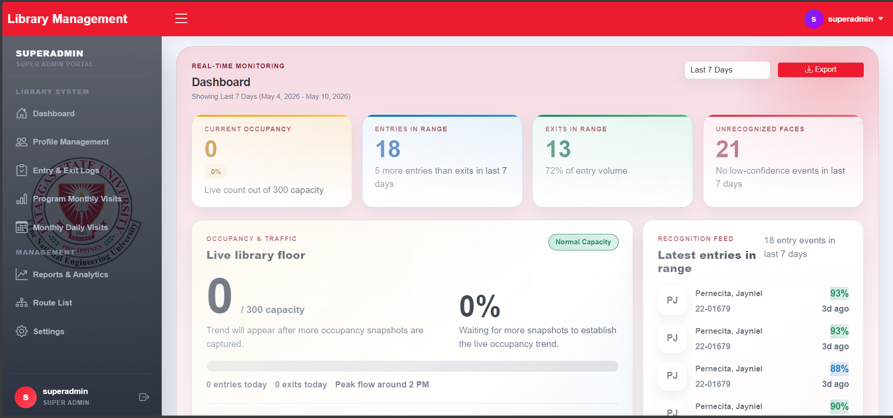

Hello, I am
Jayniel
Data analyst & full-stack developer turning data into insights and ideas into working apps.
About Me
I'm a Computer Engineering graduate, Class of 2026, from Batangas State University with a passion for data analytics, web development, and creating tools that make information accessible. I specialize in transforming complex data into actionable insights and building practical solutions that deliver impact.
Throughout my academic journey, I've developed a strong foundation in big data analytics, embedded systems, and cloud technologies. My coursework has equipped me with expertise in data visualization, networking infrastructure, and emerging technologies. I'm driven by the challenge of solving real-world problems through code and data-driven decision making.
I have hands-on experience with modern development stacks and analytical tools, combined with a deep understanding of system design principles. Whether it's architecting scalable applications, optimizing data pipelines, or crafting intuitive user interfaces, I bring a methodical approach to every project I undertake.
What Drives Me
Data Storytelling
Full-Stack Development
Problem Solving
AI & ML Innovation
As I transition into my professional career, I'm excited to apply my technical skills and analytical mindset to contribute meaningful solutions in a collaborative environment. I'm actively seeking opportunities to grow as an engineer, mentor others, and make a positive impact on technology and data-driven innovation.
Coursework, Certifications & Experience
Core Academic Focus: Big Data Analytics
- Big Data Analytics
- Embedded Systems
- Cisco Networking
- Emerging Technologies
- Microprocessors
- Data Structures and Algorithms
- Object Oriented Programming
Professional Development Timeline
Data Analytics Essentials
Cisco Networking Academy - Data Analysis, Tableau, and related technical skills.
The Bits and Bytes of Computer Networking
Google - Credential ID: PSRUC8NFHQNF. Foundational networking and systems knowledge.
Introduction to Data Science
Simplilearn - Credential ID: 970618. Data Pipelines, Data Models, and advanced analytics skills.
Internship Experience
Web Developer
SeeYouDoc - On-site internship focused on web development with Elixir and the Phoenix Framework.
Technical Skills & Projects
Mastered Elixir and Phoenix from scratch; contributed to RumbL App and Medigrant API (Filipino-Korean healthcare integration). Implemented REST APIs, database schema migrations, and unit tests. Reviewed peer code and debugged production issues.
International Teamwork
Worked in Team Bravo alongside interns from diverse backgrounds. Participated in multi-national coordination with Korean stakeholders and Indian developers (DoctorKit team). Learned professional workflows, code review processes, and GitLab version control practices.
Education
Bachelor of Science in Computer Engineering
Batangas State University
Major focus: Big Data Analytics. Comprehensive coursework in embedded systems, networking, microprocessors, and advanced programming paradigms.
Science, Technology, and Mathematics
STI College Lipa
Senior High School strand with focus on STEM subjects and scientific foundation.
Skills & Technologies
Top Skill: Programming
Data & Analytics
Web Development
Data Engineering & ML
Tools & Platforms
Projects

Automated Facial Recognition Logging System
Thesis Project - AI-powered attendance and access logging system for BSU Library using YOLOv8 and data analytics for real-time facial recognition.

Portfolio
A personal portfolio site with a dark-mode toggle, project slider, and responsive layout.

EduBrawlers
Two-player educational game that mixes calculus problems with arcade-style gameplay.

ALRShop
Responsive e-commerce frontend built with Next.js, focusing on UI/UX and smooth checkout flow.

Tkinter Analytics Dashboard
Desktop app built with Tkinter for visualizing academic demographic data.

Get In Touch
If you want to collaborate, build something useful, or just say hello, feel free to reach out.
Replace your-form-id with your Formspree endpoint, or use Netlify Forms / custom backend.